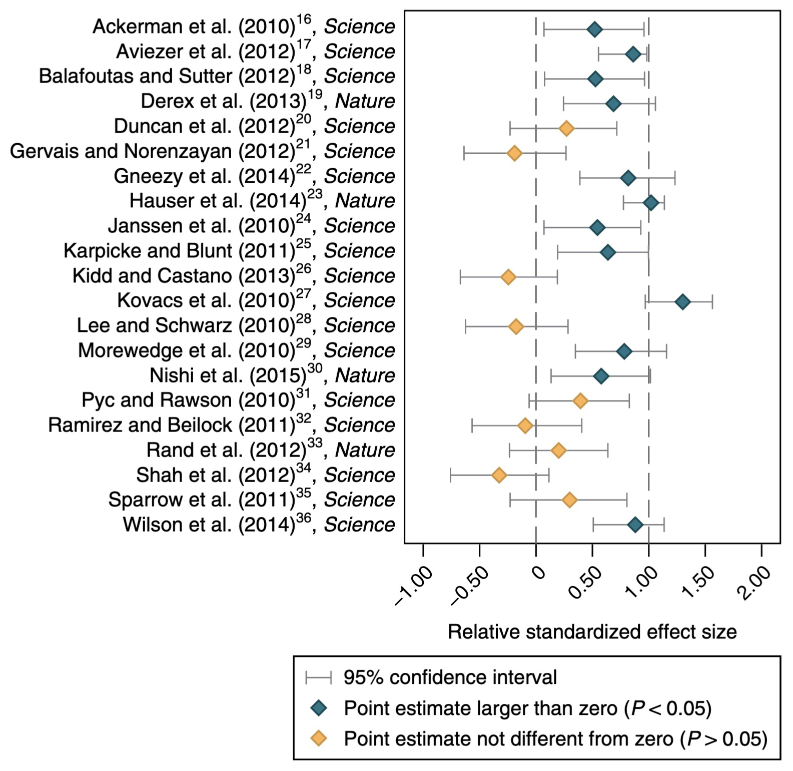
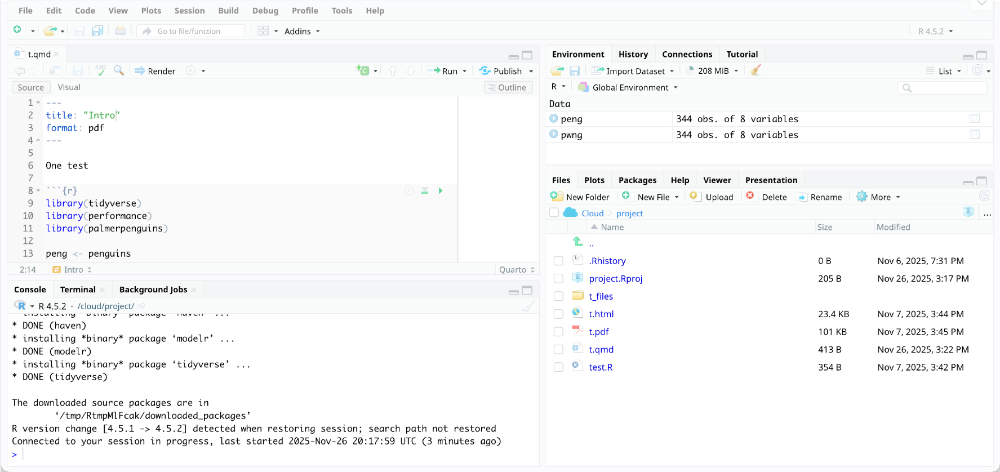
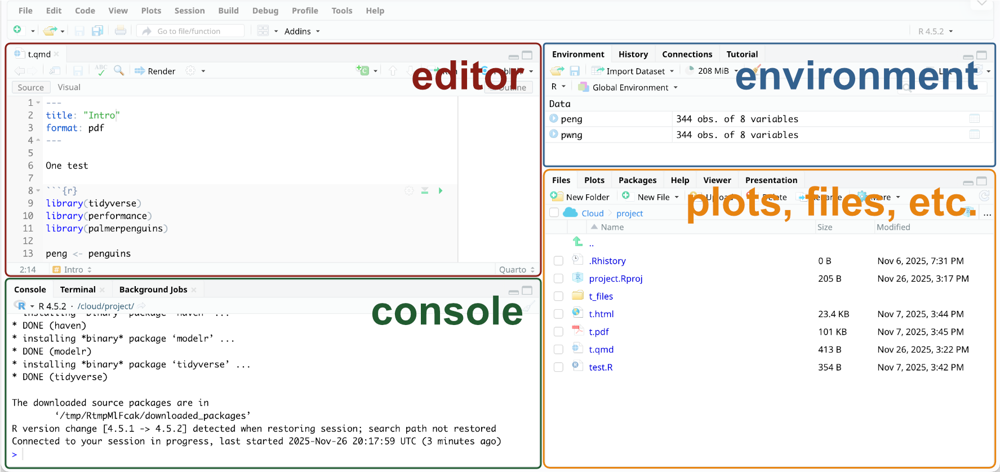
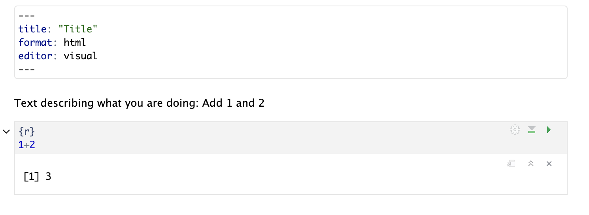

penguins # données
penguins$species # colonne
a <- 1 # sauvegarde la valeur 1 dans l'objet nommé `a`
b <- "Bonjour" # R peut stocker les nombres ET le texteIntroduction
Cours 1
Andreas Eich
Université de la Polynésie française
UE 6.7 Biostatistiques 2
À propos de moi
- Doctorant à l’EPHE (Paris), CRIOBE (Mo’orea), et Université Laval (Canada)
- Travail sur les motifs moléculaires responsables des différences de tolérance thermique du corail
- Toujours en train d’apprendre le français, soyez patients
Format du cours
- 8 × 1,5 heures
- Env. 30 minutes d’introduction (présentation), 1 heure d’exercices
- Toutes les informations du cours sur le site du cours (diapositives, dates, annonces, etc.)
- 2 examens, 1,5 heure chacun, plus une deuxième chance
Statistiques
- Transformez les données brutes en compréhension, aperçu et connaissances
- Aide à comprendre la variation
- Partie importante d’un bon flux de travail scientifique, de la documentation et de la communication
- Nécessaire pour tous les domaines de la biologie
Crise de la réplication

Mêmes données, équipes différentes (Camerer et al. 2018)
Objectif
- Comprendre et appliquer les méthodes statistiques pour analyser vos données (mémoires de BSc & MSc)
- Comprendre les idées principales des analyses dans les publications scientifiques
- Rendre les analyses ouvertes et reproductibles
- Pensée statistique : Comprendre les causes biologiques de la variation dans les données, plutôt que de se concentrer sur les valeurs p et des dizaines de tests
Approche
- Accent sur les statistiques appliquées et modernes
- Analyses « tidy » (plus sur cela plus tard)
- Travail avec de vraies données
- Les modèles statistiques comme cadre unifié
Pourquoi analyser avec du code ?
- Les scripts documentent toutes les étapes effectuées
- Les programmes à clics (par ex. Excel) cachent le flux de travail → Non reproductible
- Écrire du code nécessite de réfléchir à vos données et aux étapes d’analyse étape par étape
- Les programmes automatiques cachent ce qui se passe réellement
Éviter Excel
- Considère « tout » comme une date
- 20 % des articles de génétique contiennent des erreurs dues au formatage Excel (Ziemann, Eren, and El-Osta 2016)
- Les gènes ont été renommés parce que c’est plus facile que de gérer Excel
- Format de fichier propriétaire (c.-à-d. propriété de Microsoft) → Vous devez acheter le programme pour l’ouvrir, problèmes de compatibilité
- Utile pour entrer des données (mais envisager Google Sheets, OpenOffice, etc.)
Excel est excellent pour entrer des données, mais pas pour l’analyse
Pourquoi R ?
- Gratuit
- Conçu pour les statistiques
- Développement constant
- Extensible avec des paquets
- Communauté en ligne et bon support
- Standard en biologie
Travailler en R
- Vous n’avez pas besoin de mémoriser tout le code
- Les messages d’erreur et les avertissements sont normaux et font partie du processus d’apprentissage
- Vous n’avez pas besoin de tout comprendre aujourd’hui, vous comprendrez davantage à chaque séance
Outils utilisés dans le cours

Langage de programmation

Interface pratique pour R

Combine le texte, le code et la sortie (graphiques, tableaux, …)
→ Langage
→ Traitement de texte
→ Document .docx
Aperçu de R
Objets
Données, colonnes, vecteurs, etc.
Fonctions
Faire quelque chose, souvent avec des objets
# introduit un commentaire
Visite rapide de RStudio

Visite rapide de RStudio

Visite rapide de RStudio
- Installation très facile (mais pas sur les ordinateurs UPF)
- Utilisez « Posit Cloud », une version en ligne de RStudio (fonctionne aussi sur les tablettes)
- Je mets à disposition les feuilles de tâches chaque semaine
- 25 heures/mois gratuitement → fermez la session après utilisation
- Si vous voulez utiliser votre propre ordinateur, parlez-moi
Aperçu de Quarto
- Permet de combiner du texte (expliquant l’analyse, les étapes que vous avez prises, etc.), du code et la sortie (graphiques, tableaux, etc.)
- Peut être exporté en HTML (site web), PDF, document MS Word
- Très bon pour documenter votre travail et rendre les analyses reproductibles
Aperçu de Quarto

Paquets
Collection de fonctions qui étendent R
À vous de jouer
- Allez sur le site du cours
- Allez au calendrier
- Cliquez sur
TP1 - Connectez-vous à Posit Cloud
- Modifiez les paramètres pour économiser les heures de calcul
Références
Camerer, Colin F., Anna Dreber, Felix Holzmeister, Teck-Hua Ho, Jürgen Huber, Magnus Johannesson, Michael Kirchler, et al. 2018. “Evaluating the Replicability of Social Science Experiments in Nature and Science Between 2010 and 2015.” Nature Human Behaviour 2 (9): 637–44. https://doi.org/10.1038/s41562-018-0399-z.
Ziemann, Mark, Yotam Eren, and Assam El-Osta. 2016. “Gene Name Errors Are Widespread in the Scientific Literature.” Genome Biology 17 (1): 177. https://doi.org/10.1186/s13059-016-1044-7.